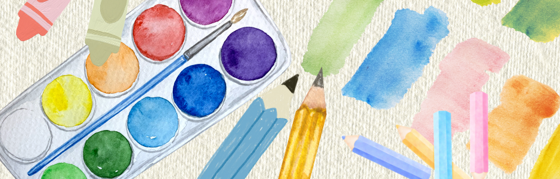
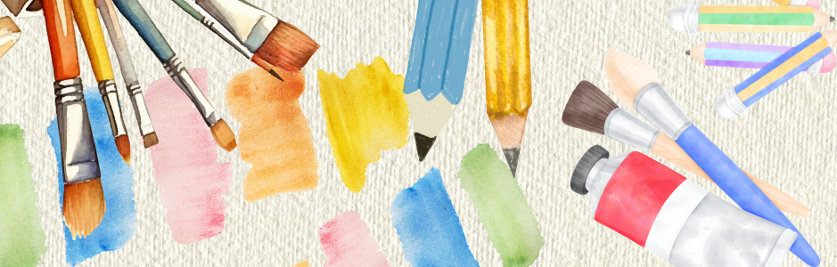

Colors are what make the world bright and beautiful. Let's learn about primary and secondary colors.

Primary colors are the three basic colors that make up every color. By mixing them, we get a variety of different shades. Primary colors consist of red, yellow, and blue.
Red - The color of apples, strawberries, and tomatoes.
Yellow - The color of the sun, bananas, and sunflowers.
Blue - The color of the sea, the sky, and blueberries.
By mixing primary colors together, we get a whole new set of colors which we call secondary colors. Secondary colors consist of orange, green, and purple.
Orange - The color of pumpkins, carrots, and of course, oranges.
Green - The color of grass and leaves.
Purple - The color of grapes and eggplants.

1. Which of these is a primary color?
Correct answer: A. Red
Red is a primary color and is the color of apples, strawberries, and tomatoes.
2. Which of these is a secondary color?
Correct answer: C. Purple
Purple is a secondary color and is the color of grapes and eggplants.
3. Is the color of leaves primary or secondary?
©2026
Made by BMMA101LGBT